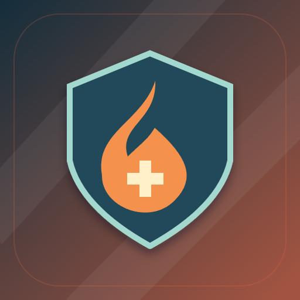

<- all projects

Operação Brasa
PC
Volume
Live
Every route is a decision.
Every opened door changes the incident. Coordinate four responders, Ana, Ivo, Bia and Ravi, protect a route and evacuate civilians before fire and smoke close the way. Planning is untimed: read the one-turn forecast, commit your orders and watch the hazards advance. Water, air and health are limited, opened doors feed the fire and ventilation clears smoke but opens a hotter path. There are 30 incidents across six building families, twelve equipment options, daily and remixed dispatches, a training yard, a scenario editor and turn-by-turn replays of every operation.